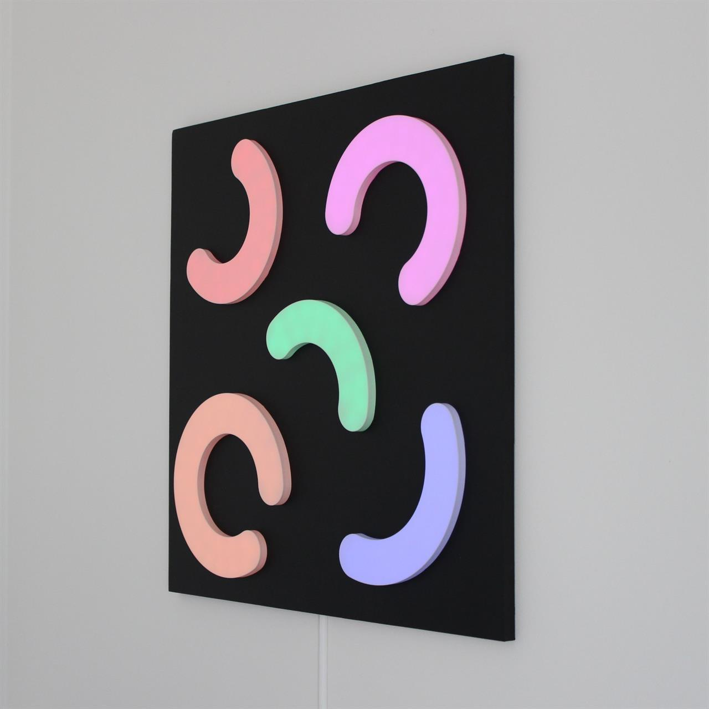
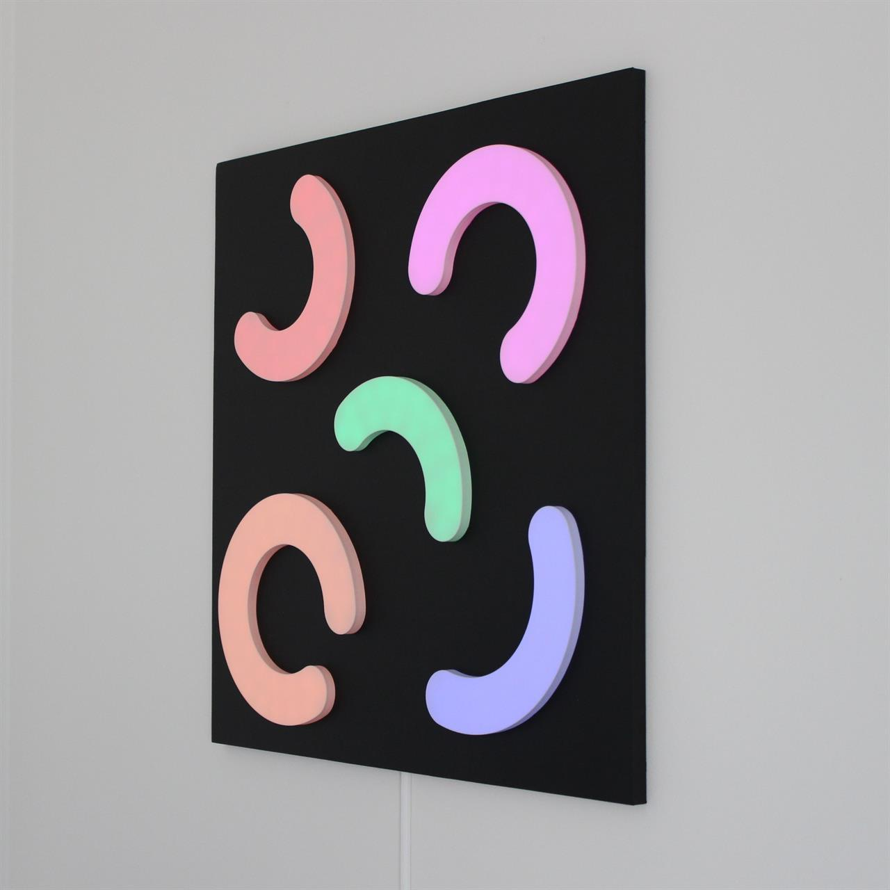

Makaronilåda
Ville göra något till en vägg men hade dålig fantasi så blev lite halvcirklar
En polare sa att det såg ut som ett barn hade lekt med makaroner
 

Hur den gjordes
Själva 3D modellen för denna är inte mycket att hänga i granen direkt så visar inte ens, är en massa hål och lite större hål på baksidan där en platta med lamporna sitter på varje del
Har ingen bild på det men på baksidan sitter det ett litet fack för en ESP32 så det är den som driver alla lampor osv
Likt typ alla andra grejer jag gjort så va de designat i flera delar som behövdes limmas, spacklas och slipas
Va dock ganska simpelt i detta fallet för de är bara en platt yta så det snabbt och smidigt
Körde på att rolla skiten men tror färgen började bli till åren för jisses va tjock den va, fick inte riktigt den ytan jag ville men det får duga
Behövde iallafall inte måla inne i varje hål för de kommer döljas ändå så det va ju trevligt iallafall
I och med att jag inte gjorde en enda rak linje så va jag tvungen att dela alla lampor och löda ihop alla igen så de fick rätt form
Började med lite väl tätt avstånd mellan lamporna och insåg ganska snabbt att jag inte hade tillräckligt med lampor för de så på alla utom en har lite mer avstånd mellan lamporna
Glömmer varje gång jag gör något i denna stilen hur tråkigt de är att löda ihop dessa lamporna, blev iallafall 140 lampor om någon undrar
Finns lite fack på baksidan för kablarna med så den kan sitta platt på väggen